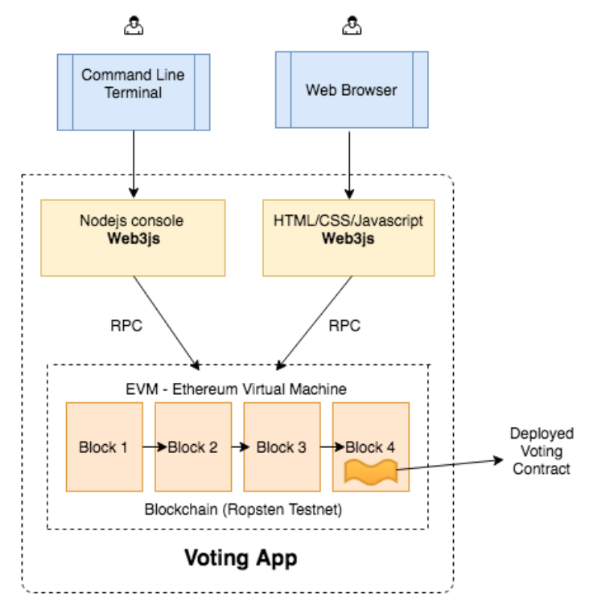

2022.3.10
在课程 “简单投票 Dapp” 中，你已经在一个模拟的区块链(ganache)上 实现了一个投票合约，并且成功地通过 nodejs 控制台和网页与合约进行了交互。 在接下来的项目学习中，我们将会实现以下内容:

用 Geth 启动私链
# Web - Httpgeth --datadir ./mychain/ --networkid 15 --dev --dev.period 0 --password password.txt --http --http.api personal,eth,net,web3 --http.corsdomain '*' console --allow-insecure-unlock 2>output.log# Web - WSgeth --datadir ./mychain/ --networkid 15 --dev --dev.period 0 --password password.txt --ws --ws.api personal,eth,net,web3 --ws.origins '*' console --allow-insecure-unlock 2>output.log# Web - Ws and Httpgeth --datadir ./mychain/ --networkid 15 --dev --dev.period 0 --password password.txt --http --http.api personal,eth,net,web3 --http.corsdomain '*' --ws --ws.api personal,eth,net,web3 --ws.origins '*' console --allow-insecure-unlock 2>output.log# 如果我们想到直接连接到测试网络，可以用下面的命令:nohup geth --testnet --syncmode fast --rpc --rpcapi db,eth,net,web3,personal --cache=1024 --rpcport 8545 --rpcaddr 127.0.0.1 --rpccorsdomain "*" 2>output.log &--testnet: 这是告诉 geth 启动并连接到最新的测试网络。我们所连接的网络是 Ropsten。
--syncmode fast: 我们知道，当用 geth 连接主网或测试网络时，它必须在 本地电脑上下载整个区块链。你需要下载完整的区块链并执行每个块里面的每一 笔交易，这样你就在本地电脑上拥有了整个历史。这非常耗费时间。不过，也有 其他模式或者说优化方法，比如你只需要下载交易收据，而不用执行每一笔交易， 这就是“快速”模式。如果我们并不需要整个区块链历史，就可使用这样的 fast 模式同步区块链。
一旦你按照指示启动 geth，它会启动以太坊节点，连接到其他对端节点并开始下载区块链。下载区块链的时间取决于很多因素，比如你的网速，内存，硬盘类型等等。一台 8GB 内存，SSD 硬盘和 10 M 网速的电脑大概需要 7~8 个小时。如果你用快速模式同步 Ropsten，大概需要 6-7 GB 的硬盘空间。
用 Rinkeby 替换 Ropsten
有些同学在 Ropsten 测试网上运行 geth 会遇到问题。如果耗费时间太长 的话，你可以换一个叫做 Rinkeby 的测试网(300 多万个块，下载区块大约 1 个多小时，同步状态大约需要 4~5 个小时，到 Imported new chain segment 即 已完成同步)。下面是启动 geth 并同步 Rinkeby 网络的命令。
geth --rinkeby --syncmode "fast" --rpc --rpcapi db,eth,net,web3,personal --cache=1024 --rpcport 8545 --rpcaddr 127.0.0.1 --rpccorsdomain "*"Full Sync: 从周围节点获取 block headers, block bodies, 并且从初始区块 开始重演每一笔交易以验证每一个状态
Fast Sync: 从周围节点获取 block headers, block bodies, 但不会重演交易 (只拿 receipts). 这样就会拿到所有状态的快照(不验证)，从此跟全节点一 样参与到网络中.
Light Sync: 只拿当前状态(没有历史账本数据). 如果要验证一笔交易，就必 须从另外的全节点处获取历史数据
工作流(Workflow)
如果你正在构建一个基于以太坊的去中心化应用，你的 workflow 可能是像这样
Development(开发环境): Ganache
Staging/Testing(模拟/测试环境): Ropsten, Rinkeby, Kovan or your own private network
Production(生产环境): Mainnet
Truffle
安装npm install -g truffle
然后我们创建一个空目录，在下面创建 truffle 项目
mkdir simple_voting_by_truffle_dappcd simple_voting_by_truffle_dappnpm install -g webpacktruffle unbox webpacktruffle init: 在当前目录初始化一个新的 truffle 空项目(项目文件只有 truffle-config.js 和 truffle.js;contracts 目录中只有 Migrations.sol;migrations 目录中只有 1_initial_migration.js)
truffle unbox: 直接下载一个 truffle box，即一个预先构建好的 truffle 项目;
unbox 的过程相对会长一点，完成之后应该看到提示
这里的 webpack 就是一个基于 webpack 构建流程的官方项目框架(truffle box)，更多 truffle box 参见 https://truffleframework.com/boxes
webpack: 一个流行的前端资源依赖管理和打包工具。
简介：truffle unbox webpack 一条命令由于要下载众多需要的模块，大概耗时 10 分钟左右，所以我们先来了解一下 Truffle。
Truffle 是目前最流行的以太坊 DApp 开发框架，(按照官网说法)是一个世界级的开发环境和测试框架，也是所有使用了 EVM 的区块链的资产管理通道，它基于 JavaScript，致力于让以太坊上的开发变得简单。Truffle 有以下功能:
Truffle 的客户端
我们之后写的智能合约必须要部署到链上进行测试，所以 truffle 构建的 DApp 也必须选择一条链来进行部署。我们可以选择部署到一些公共的测试链比 如 Rinkeby 或者 Ropsten 上，缺点是部署和测试时间比较长，而且需要花费一定的时间赚取假代币防止 out of gas。当然，对于 DApp 发布的正规流程，staging (模拟环境)还是应该用测试公链的。
还有一种方式就是部署到私链上，这在开发阶段是通常的选择。Truffle 官方推荐使用以下两种客户端:
Ganache 我们已经接触过了，之前的简单投票小项目就是用它来做模拟区块链的。这里再介绍一点命名背景。它的前身是大名鼎鼎的 testRPC，网上的很多 truffle 教学的老文章里都是用 testRPC。Ganache 是奶油巧克力的意思，而 Truffle 是松露巧克力，一般是以 Ganache 为核，然后上面撒上可可粉，所以这两个产品的名字还是很贴切的。
而 truffle develop 是 truffle 内置的客户端，跟命令行版本的 Ganache 基本类似。在 truffle 目录下 bash 输入:truffle develop即可开启客户端，和 ganache 一样，它也会给我们自动生成 10 个账户。
唯一要注意的是在 truffle develop 里执行 truffle 命令的时候需要省略前面的 “truffle”，比如“truffle compile”只需要敲“compile”就可以了
初始化一个 truffle 项目时，它会创建运行一个完整 dapp 所有必要的文件和目录。我们直接下载 webpack 这个 truffle box，它里面的目录也是类似的:
>lsREADME.md contracts node_modules testwebpack.config.js truffle.js app migrations package.json>ls app/index.html javascripts stylesheets >ls contracts/ConvertLib.sol MetaCoin.sol Migrations.sol>ls migrations/1_initial_migration.js 2_deploy_contracts.jstruffle 也会创建一个你可以快速上手的示例应用(在本课程中我们并不会用到该示例应用)。你可以放心地删除项目下面 contracts 目录的 ConvertLib.sol 和 MetaCoin.sol 文件。
rm contracts/ConvertLib.sol contracts/MetaCoin.sol此外，在你的项目目录下查找一个叫做 truffle.js 的配置文件。它里面包含了一个用于开发网络的配置。将端口号从 7545 改为 8545，因为我们的私链及 ganache 默认都会在该端口运行。
理解 migrations(迁移)目录的内容非常重要。这些迁移文件用于将合约部署到区块链上。如果你还记得的话，我们在之前的项目中通过在 node 控制台中调用 VotingContract.new 将投票合约部署到区块链上。以后，我们再也不需要这么做了，truffle 将会部署和跟踪所有的部署。
Migrations(迁移)是 JavaScript 文件，这些文件负责暂存我们的部署任务，并且假定部署需求会随着时间推移而改变。随着项目的发展，我们应该创建新的迁移脚本，来改变链上的合约状态。所有运行过的 migration 历史记录，都会通过特殊的迁移合约记录在链上。
第一个迁移 1_initial_migration.js 向区块链部署了一个叫做 Migrations 的合约，并用于存储你已经部署的最新合约。每次你运行 migration 时，truffle会向区块链查询获取最新已部署好的合约，然后部署尚未部署的任何合约。然后它会更新 Migrations 合约中的 last_completed_migration 字段指向最新部署的合约。你可以简单地把它当成是一个数据库表，里面有一列last_completed_migration ，该列总是保持最新状态。
migration 文件的命名有特殊要求:前缀是一个数字(必需)，用来标记迁移是否运行成功;后缀是一个描述词汇，只是单纯为了提高可读性，方便理解。
在脚本的开始，我们用 artifacts.require() 方法告诉 truffle 想要进行部署迁移的合约，这跟 node 里的 require 很类似。不过需要注意，最新的官方文档告 诫，应该传入定义的合约名称，而不要给文件名称——因为一个.sol 文件中可能 包含了多个 contract。
migration js 里的 exports 的函数，需要接收一个 deployer 对象作为第一个参数。这个对象在部署发布的过程中，主要是用来提供清晰的语法支持，同时提供一些通用的合约部署职责，比如保存部署的文件以备稍后使用。deployer 对象 是用来暂存(stage)部署任务的主要操作接口。
像所有其它在 Truffle 中的代码一样，Truffle 提供了我们自己代码的合约抽象层(contract abstractions)，并且进行了初始化，以方便你可以便利的与以太坊 的网络交互。这些抽象接口都是部署流程的一部分。
将2_deploy_contracts.js内容更新为以下信息:
var Voting = artifacts.require("./Voting.sol");module.exports = function(deployer) {deployer.deploy(Voting, ['Alice', 'Bob', 'Cary'], {gas: 290000});};从上面可以看出，部署者希望第一个参数为合约名，跟在构造函数参数后面。
在我们的例子中，只有一个参数，就是一个候选者数组。第三个参数是一个哈希，我们用来指定部署代码所需的 gas。gas 数量会随着你的合约大小而变化。对于投票合约，290000 就足够了。
2022.3.10
geth --datadir ./mychain/ --networkid 15 --dev --dev.period 0 --password password.txt --http --http.api personal,eth,net,web3 --http.corsdomain '*' --ws --ws.api personal,eth,net,web3 --ws.origins '*' console --allow-insecure-unlock 2>output.log安装环境
npm install webpacknpm install -g truffle@5.1.48truffle
truffle inittruffle unbox webpack